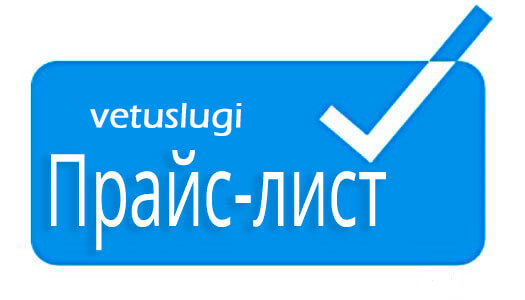

ЦЕНЫ НА ВЕТУСЛУГИ
| Аборт-медикаментозный, при нежелательной беременности у собаки | 500 -1000 |
| Анализы собакам и кошкам на дому | 200 -3000 |
| Анальные железы воспаление | 300 -1000 |
| Аллергии | 200 -1500 |
| Артриты, артрозы | 500 -800 |
| Асцит у кошек и собак | 1000 -1500 |
| Бешенство у животных и людей | 1000 |
| Блохи вши власоеды, полная обработка животных и помещения | 200 -600 |
| Вакцинация животных | 2000 |
| Ветеринар онлайн | 500 |
| Ветпрепараты | |
| Ветеринарный фельдшер на дом | 800 |
| Вызов ветеринарного врача на дом | 500 |
| Голосовые связки у собак - удаление | 3500 |
| Гомеопатия | 200 -900 |
| Грыжи | 1500 -2500 |
| Глисты - гельминты | 100 -700 |
| Демодекоз у собак | 500 -1500 |
| Дисплазия у собак | 700 -3000 |
| Заворот века у собак | 2000 -2500 |
| Запор, кишечная непроходимость у кошек и собак | 1000 -1500 |
| Инсульты | 800 |
| Как выбрать здоровое животное | 1000 |
| Кальцивироз | 500 -1800 |
| КАСТРАЦИЯ КОБЕЛЕЙ | 2000 -2500 |
| КАСТРАЦИЯ КОТОВ | 1500 -2000 |
| Катетеризация мочевого пузыря | 2000 |
| Кесарево сечение у собак кошек | 2000 -3000 |
| Кожные болезни | 450 -1000 |
| Консультации по уходу содержанию и кормлению животных | 500 |
| Кролики болезни | 300 -900 |
| Кролики - лечение,кастрация, стерилизация, вакцинация | 1000 -2000 |
| Крысы, хомяки лечение Ратолог | 500 -1500 |
| Купирование ушей и хвостов всем породам собак | 2000 -3000 |
| Лейкемия кошек | 2000 |
| ЛИШАЙ, МИКРОСПОРИЯ, ТРИХОФИТИЯ - дерматолог | 500 -1900 |
| Ложная щенность | 200 -950 |
| Мастит у кошек и собак | 700 |
| Мочекаменная болезнь | 800 -3000 |
| Обработка и лечение ран | 500 -2600 |
| Обработка от блох и клещей | 1300 |
| ОНКОЛОГ - лечение, удаление опухолей | 600 -3000 |
| Опухоли молочных желез | 500 -2500 |
| Орнитолог- лечение птиц | 600 -2000 |
| Ожоги у кошек и собак | 500 |
| Операции на желудочно-кишечном тракте | 2000 -6000 |
| Остановка кровотечений | 800 |
| Отек легких у кошек и собак | 2000 |
| Отиты у кошек,собак,хорьков,кроликов | 600 -1900 |
| Отодектоз у кошек и собак | 500 -2000 |
| Отравления | 1500 |
| ОФТАЛЬМОЛОГ - глазной ветеринарный врач | 1000 -2000 |
| Панлейкопения кошек | 1800 |
| Передержка после операций | 1000 |
| Переломы, операция остеосинтез | 3000 -6000 |
| Перитонит кошек вирусный | 2500 |
| ПИОМЕТРА у собак и кошек | 3000 -5000 |
| Почечная недостаточность | 2000 |
| Пироплазмоз у собак | 2000 -4000 |
| Прибылые пальцы у собак | 1000 |
| Проведение любых хирургических операций на дому | 500 -2000 |
| Реанимация | 1000 |
| Р Е Н Т Г Е Н | 500 -1700 |
| Ринотрахеит у кошек | 2000 |
| Родовспоможение собакам, кошкам | 1000 -3000 |
| Сахарный диабет у собак кошек | 1700 |
| Сердечная недостаточность у собак кошек | 600 -2000 |
| Стафилаккок у собак | 900 |
| Советы ветеринаров | Беспл. |
| Срочный выезд ветеринарного врача | 1000 |
| СТЕРИЛИЗАЦИЯ КОШЕК - ЛАПАРОСКОПИЯ | 1900 -3000 |
| СТЕРИЛИЗАЦИЯ СОБАК - ЛАПАРОСКОПИЯ | 2500 -4000 |
| СТОМАТОЛОГИЯ | 700 -2700 |
| Стрижка собак и кошек | 2000 |
| Стрижка животных c наркозом | 2200 |
| Стрижка когтей животным | 1500 |
| Такси для собак и кошек | 500 |
| Токсоплазмоз | 700 |
| Удаление когтей у кошек | 1000 -3000 |
| У З И - Ультразвуковое исследование | 2000 -2500 |
| Укол от течки кошкам и собака, контрасекс, сексбарьер на 6 месяцев | 2000 |
| Укусы змеями, насекомыми собак и кошек | 1000 |
| УСЫПЛЕНИЕ И КРЕМАЦИЯ | 1000 -3000 |
| Хорьки - вакцинация, стерилизация, кастрация, лечение | 1600 -3000 |
| Хронические заболевания | 750 |
| Черепахи, игуаны, рептилии - лечение | 500 -3000 |
| Чипирование животных | 2000 |
| Чумка у собак | 900 |
| Э К Г- электрокардиограмма | 800 -2500 |
| Эндометрит - воспаление матки кошки | 1000 -3000 |
| Энтерит у собак | 1000 |
| Эпилепсия у собак | 2500 |
| Э Х О- эхо сердца на дому | 3000 |